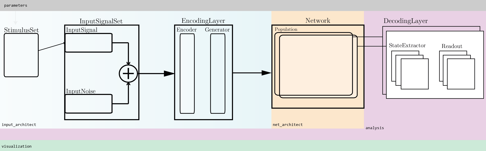

Quick overview
NMSAT architecture overview:¶
 The framework is built on a modular structure, which can be divided into six main elements (the core modules):
-
Parameters: complex nested dictionaries, specified as an independent file. Typically this is the most sensitive aspect of the whole framework as the structure and contents of these dictionaries determines all the specificities of the experiments. Different sub-dictionaries should be created for each type of parameters (see parameters)
-
Input Architect: handles all the generation and preprocessing of input stimuli and signals. Being quite flexible, it is difficult to describe a single workflow for Input Architect, but in the relatively complex scenario illustrated above, it would consist of a
StimulusSetobject, which wraps multiple stimulus sequences (as labelled, binary feature vectors, subdivided into train and test set, for example), anInputSignalSet, which contains all the input signals generated from the stimulus sequences, according to the chosen transduction strategy, as well as instances of input noise which can be added to the signal or provided as an independent input. Finally, theEncodingLayerconsists of generators (NEST devices) and/or encoders (Population objects, typically spiking neurons). Note that, any of these components can be removed or manually specified, for example, it may be important to provide a very specificInputSignal, which can be loaded as a numpy array. In this alternative scenario, theStimulusSetwould be unnecessary. Stimulus sets can also be manually generated and loaded onto the framework. -
Network Architect:
-
Analysis:
Note that, depending on the experiment, not all of the components are necessary and it is frequently the case that only sub-sets of these modules are used in a given experiment (see examples), depending on the nature of the input stimuli (if any), the nature of the circuit and what is intended to be measured.
Code structure¶
The code is organized as follows:
├── nmsat │ ├── modules │ │ ├── parameters.py │ │ ├── input_architect.py │ │ ├── net_architect.py │ │ ├── signals.py │ │ ├── analysis.py │ │ ├── visualization.py │ │ ├── io.py │ ├── defaults │ │ ├── paths.py │ │ ├── matplotlib_rc │ │ ├── cluster_templates │ │ │ ├── cluster_jdf.sh │ ├── data │ ├── projects │ │ ├── project_name │ │ │ ├── computations │ │ │ ├── parameters │ │ │ │ ├── preset │ │ │ ├── scripts │ │ │ ├── read_data │ ├── export
The core functionality lies in the modules packages, which contain all the relevant classes and functions used. The specifics will be explained in greater detail below, but in general the modules are responsible for:
parameters- parsing and preparing all parameters files; retrieving stored parameter sets and spaces and harvesting datainput_architect- generating and setting up all the relevant input stimuli and signals; handling input data; generating and connecting input encoding layersnet_architect- generating specific networks and neuronal populations; generating all connectivity and topology features; connecting populations; ...signals- wrapping and processing the various signal types used in the framework (spiking activity, analog variables, etc)analysis- post-processing and analysing population activity in various waysvisualization- plotting routinesio- loading and saving data